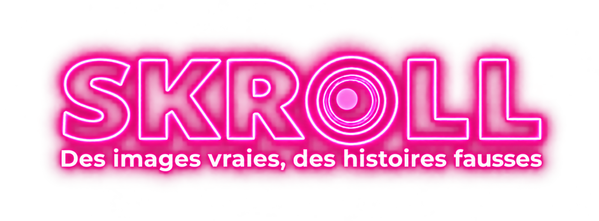

Mes actus
Expo « Conversations », à PlougasnouSept portraits en lumière lente, à la médiathèque jusqu'au 2 janvier.
Pour cette série, j'ai décidé d'essayer de trouver comment capter ce qui se crée entre deux personnes lors d'une rencontre. Si je suis A et vous B, entre nous, à force de discuter, se crée une nouvelle entité qu'on appellera C.
C'est cette entité que j'ai essayé de capter à l'aide d'une recherche graphique et esthétique, mélangeant lumière continue et flash, laissant apparaître sur toutes les photos une lumière parasite, un temps de pose long, cherchant volontairement des erreurs, de l'impalpable et parfois de la magie.
Skroll, des images vraies, des histoires faussesUn épisode chaque soir à 18 h.

Programme court de détournement d'archives de la Cinémathèque de Bretagne, coécrit et réalisé avec Pierre-Emmanuel Urcun et Sébastien Cassen. Production Stank.
Grand concours : gagnez Flying CarChaque carte postale achetée, une chance de gagner.
Flying Car, la plus grande pièce exposée à la Brasserie Graphique. Tirage au sort le 24 décembre.
Plateau de cinéma, Les Nouveaux WesternsPhotographie de plateau.
Train FatalCompagnie de théâtre.
Primel GastronomiePhotographie culinaire. Un studio installé sur place.
Expo « Lumière lente, sortie d'atelier », à CarantecExposition collective à la Galerie LC.
Pour cette exposition, j'ai voulu faire un accrochage de mes recherches en cours, qui ressemble aux post-it qu'on colle au mur quand on écrit ou monte un film, quand on cherche l'histoire qu'on va raconter.
Galerie LC, Carantec, du 12 au 21 juin 2026, avec sept artistes.
MajoretteSpectacle de la Grande Parade.
Expo « Dust'in Kolor », à la Brasserie GraphiqueCollaboration avec la Brasserie Graphique pour la création de la bière La Photographique.
Dans cette série, j'ai souhaité travailler le monochromatique à partir de photos prises pendant les tempêtes de sable dans le désert du Nevada, pendant le festival Burning Man.
Cette série a été créée à l'occasion d'une collaboration avec la Brasserie Graphique de Carantec et la création de la bière La Photographique. Toujours visible dans leurs locaux de Carantec.
Cette série colorée et graphique rappelle ce qu'on voit lorsqu'on met nos lunettes de protection aux verres colorés.
La Régal CompagnieCompagnie de théâtre.
L'EHPAD PatrouilleLe portrait d'un EHPAD par ses salariés.
Sous ce nom volontairement rigolo, je souhaitais mettre en valeur tous les métiers qui font vivre un EHPAD. Ces métiers souvent oubliés, invisibilisés, et qui pourtant sont ceux grâce à qui nos aînés peuvent dignement terminer leur parcours.
Ainsi, j'ai passé quelques heures avec chacun sur son poste de travail, sans appareil photo, à discuter. Puis, encore une fois, en gardant toujours la même démarche, j'ai créé un studio avec une esthétique de drapé, souhaitant les mettre en valeur en contre-plongée, comme des bustes, ces personnes qui travaillent au quotidien à rendre leur dignité aux aînés souvent oubliés.
C'est un portrait d'un EHPAD par ses salariés.
Juste AprèsCompagnie de théâtre.
Ernest L'Hour, le dernier goémonier de l'île CallotFilm de musée, entretien et archives. Musée de la Mer de Carantec.
Un portrait d'Ernest L'Hour, le dernier goémonier de l'île Callot, mélangeant entretien et images d'archives de la Cinémathèque de Bretagne.
Le GEM s'endimancheRegarder les photos, écouter les histoires de vie.
Pour cette série de portraits, j'ai d'abord réalisé des podcasts sonores, de longs entretiens avec chacun, pour qu'il m'explique son parcours de vie, souvent cabossé. Le GEM est un lieu d'accueil pour des personnes qui, pour beaucoup, ont eu des difficultés, des parcours psychiatriques compliqués.
Puis j'ai monté un studio éphémère, où je les ai invités à venir s'endimancher, comme disait ma grand-mère.
Cette série a reçu a posteriori le label Grande Cause Nationale du ministère de la Santé, et a été exposée dans le cadre des SISM, les Semaines d'information sur la santé mentale.
Portraits croisés, Carré d'AsDix-huit portraits, photographiques et peints, avec le peintre Christophe Pelletier.
J'arriveCourt métrage de fiction. Dix prix.
Après 65 ans de mariage, Hubert se retrouve seul le jour de la mort de Mamie ; sa petite-fille Léonie arrive pour l'aider ; oppressés par les adultes qui s'affairent, la meilleure idée est peut-être d'ouvrir un whisky hors d'âge.
Armel Le Cléac'h, à l'assaut des flotsTrente minutes pour le 13H15 de France 2.
Bretagne, road-trip dans les Monts d'ArréeFilm de commande, tourisme.
Portrait d'archives, Jean RochefortTrouver l'archive que tout le monde aurait aimé oublier.
Passionné d'archives dans la rédaction de Laurent Delahousse, 13H15 et 20H30, je me suis vu confier les portraits des invités de 20H30 le dimanche, réalisés 100 % à partir d'archives INA.
Mon concept : chercher à trouver dans les archives l'empreinte médiatique de chaque personne invitée. Mon jeu, mon défi personnel : trouver l'archive que tout le monde aurait aimé oublier. L'invité étant en plateau, mon but était d'avoir une réaction.
Portrait d'archives, Claude LelouchPortrait d'un invité du 20H30 le dimanche, sur France 2. Deux minutes, 100 % archives INA.
Portrait d'archives, Daniel Cohn-BenditPortrait d'un invité du 20H30 le dimanche, sur France 2. Deux minutes, 100 % archives INA.
Portrait d'archives, Marc LevyPortrait d'un invité du 20H30 le dimanche, sur France 2. Deux minutes, 100 % archives INA.
Portrait d'archives, Aurélie FilippettiPortrait d'un invité du 20H30 le dimanche, sur France 2. Deux minutes, 100 % archives INA.
Les hommes du commando KiefferQuarante minutes pour le 13H15 de France 2. Archives Pathé, INA.
À vos postes ! L'arrivée de la télévision en FranceQuarante minutes d'archives pour le 13H15 de France 2.
Un Zèbre dans le Kreiz BreizhDocumentaire. DJ Zebra et le Bagad de Carhaix.
Taxi Driver suédé par Michel Gondry
Mon Œil, avec Michel MompontetLa chronique satirique du 13H15. 209 numéros.
Assistant réalisateur, documentaliste, archiviste, recherche d'images (INA, Reuters, Pathé, AFP, web).